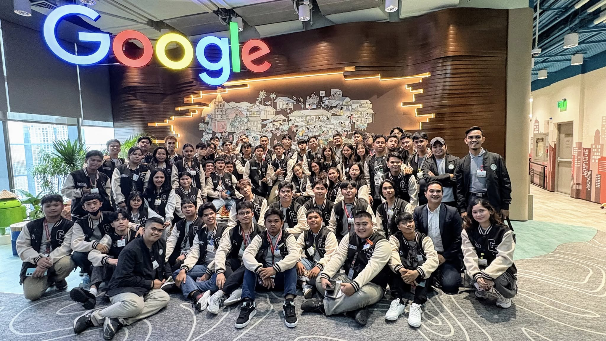

Our visit to Foundever was an eye-opening experience. As one of the top BPO companies globally, Foundever gave us a look into the heart of customer service operations, global workforce dynamics, and career opportunities in the industry.
We had a guided tour of their operations floor, attended a short orientation about life in the BPO world, and even got to interact with some of their team leads and recruitment officers. It helped us understand the scope of tech support, customer engagement, and global communication systems.
Visiting Foundever helped solidify our understanding of the business process outsourcing industry. It showed us how technology and human communication intertwine to deliver excellent customer experiences on a global scale. This visit also gave many of us ideas for our own career paths after graduation.
Our visit to Google Philippines gave us an inside look at their culture of innovation, creativity, and inclusion. We toured their vibrant offices, attended a discussion about tech career paths, and learned how teams collaborate using cutting-edge tools.
Our session with Teleperformance highlighted how AI, customer service, and real-time analytics come together to build exceptional customer experiences across the globe. The company’s scale and tech infrastructure were truly impressive.
We had the opportunity to attend a short seminar on multilingual support systems and how automation improves customer satisfaction. The team also showcased the tools they use for remote monitoring, productivity, and employee wellness.
The visit was a great reminder that technology is not just about systems but also people. It emphasized how tech can empower both employees and customers, and inspired many of us to consider careers in service-driven industries.

Our visit to Kollab offered a refreshing perspective on how collaboration, creativity, and technology can thrive in one space. As a hub for startups, freelancers, and creators, Kollab fosters innovation by providing the tools and environment needed to turn ideas into action.
We joined a session that emphasized the value of co-working spaces in today’s flexible digital economy. The speakers discussed how Kollab supports diverse teams through shared resources, networking events, and tech-driven project tools that encourage productivity and connection.
The experience inspired us to think outside the usual corporate structures — showing us that workspaces can be dynamic, inclusive, and community-oriented. It left many of us motivated to pursue creative paths and explore collaborative spaces where both passion and purpose can grow.
Kollab made us realize the power of spaces — how they can influence the way we work and connect. It inspired some of us to pursue startup dreams, and for others, a newfound respect for work-life balance.


Visiting ADB opened our eyes to how global development organizations use technology for sustainable impact. The bank’s IT division shared how they manage data, implement secure systems, and monitor multi-country projects with efficiency and transparency.
We learned about project tracking, development software, and how digital strategies help in achieving UN Sustainable Development Goals (SDGs).
ADB’s visit helped us understand that tech has a role beyond business — it can create meaningful social change. It reminded us that as future IT professionals, we can be part of something bigger than ourselves.


Microsourcing gave us an in-depth view of managed outsourcing and digital service delivery. Their team walked us through the different departments and explained how businesses from around the world rely on their tech and support teams to scale operations effectively.
The experience helped us understand the workflow in a high-performing outsourcing firm and made us realize the importance of global client communication and the wide range of career paths in tech-support outsourcing.
We explored their tech stack, observed how teams manage multiple client accounts, and learned about the roles in project management, UI/UX, development, and operations in a BPO-digital hybrid setup.

Visiting companies like Foundever, Google, Kollab, Teleperformance, the Asian Development Bank, and Microsourcing gave me a deeper understanding of what the tech and business world really looks like beyond the classroom. Each organization had its own identity, but all shared a commitment to innovation, adaptability, and growth. Foundever showed us how communication and customer care are evolving with the help of automation and AI. At Google, we got a glimpse of a culture that thrives on creativity and pushing boundaries — it was inspiring to see how a global company still values individuality and collaboration at every level.
Kollab stood out as a creative space that challenged our idea of what a workplace can be. It emphasized the power of community and how shared spaces can foster innovation, especially for startups and freelancers. Meanwhile, Teleperformance demonstrated how technology and empathy go hand in hand, especially in customer service. They reminded us that behind every tool or software are real people making real connections. The Asian Development Bank visit gave us a wider perspective — one that extends beyond private business, focusing on how digital solutions can be used for long-term social impact and sustainable development. And finally, Microsourcing opened our eyes to the world of outsourcing and how opportunities can be built globally through localized expertise.
Each visit taught me something different — not just about business models or technology, but about passion, leadership, adaptability, and purpose. It was eye-opening to hear from professionals who once stood where we are now, and to imagine ourselves in their place someday. These experiences didn't just give me information — they gave me clarity, direction, and motivation to keep growing and pursuing a career that creates impact.